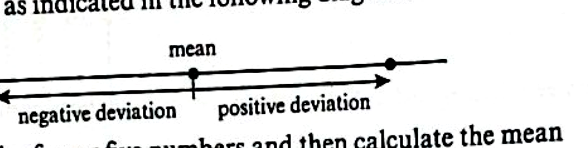

LESSON 3 · 35 MIN
Variance & Standard Deviation
A single number for spread that uses every data value — not just the extremes.
Cambridge 9709 Paper 5 · Topic 5.1 · Ch 3 §3.4
CORE DEFINITIONS
Deviation, variance, SD
- Deviation of a value: $x_i - \bar{x}$ — its signed distance from the mean.
- Variance: the mean of the squared deviations. Squaring removes the sign so positive and negative deviations don't cancel.
- Standard deviation (SD): $\sqrt{\text{variance}}$ — back in the original units of $x$.
$\text{Var}(x) = \dfrac{\sum (x - \bar{x})^2}{n}$

Cambridge Coursebook §3.4
CORE · COMPUTATION
The exam-ready formula
Expanding $(x-\bar{x})^2$ gives a version you can compute from just $\sum x$ and $\sum x^2$:
$\text{SD}(x) = \sqrt{\dfrac{\sum x^2}{n} - \bar{x}^{\,2}} \qquad \bar{x} = \dfrac{\sum x}{n}$
For a frequency table:
$\text{SD}(x) = \sqrt{\dfrac{\sum x^2 f}{\sum f} - \bar{x}^{\,2}} \qquad \bar{x} = \dfrac{\sum xf}{\sum f}$
Always use the exact mean inside $\bar{x}^2$ — a rounded mean can swing the SD by $\sim 15\%$.
WORKED · FREQUENCY TABLE
Worked example 3.7
Set-up
Find the SD of $x$ given:
$\sum f=51,\ \sum xf=708,\ \sum x^2 f=9920$.
Verified answer
$\bar{x}=\tfrac{708}{51}$ (keep exact).
$\text{SD} = \sqrt{\tfrac{9920}{51} - \left(\tfrac{708}{51}\right)^2} = \mathbf{1.34}$ (3 s.f.)
CLASSWORK · 7 MIN
Try it yourself
Find the mean and the standard deviation for the set of numbers: 27, 43, 29, 34, 53, 37, 19, 58. [Exercise 3B Q1a]
Hint: $n=8$. Compute $\sum x$ and $\sum x^2$ first.
Verified final answer
$\sum x = 300 \Rightarrow \bar{x} = \tfrac{300}{8} = 37.5$.
$\sum x^2 = 729+1849+841+1156+2809+1369+361+3364 = 12\,478$.
$\text{Var} = \tfrac{12478}{8} - 37.5^2 = 1559.75 - 1406.25 = 153.5$.
Mean $= 37.5$ and SD $= \sqrt{153.5} \approx 12.39$ (2 d.p.).
ASSIGNMENT · TAKE HOME
For next lesson
The table shows the number of pets owned by each of 35 families. Find the mean and variance of the number of pets. [Exercise 3B Q3]
| No. pets | 0 | 1 | 2 | 3 | 4 | 5 |
|---|
| No. families | 6 | 12 | 9 | 4 | 3 | 1 |
|---|
Verified final answer
$\sum f = 35$; $\sum xf = 0+12+18+12+12+5 = 59$; $\sum x^2 f = 0+12+36+36+48+25 = 157$.
$\bar{x} = \tfrac{59}{35} \approx 1.69$ pets.
$\text{Var} = \tfrac{157}{35} - \left(\tfrac{59}{35}\right)^2 \approx 4.486 - 2.841 \approx 1.64$.
Mean $\approx 1.69$ and Variance $\approx 1.64$.